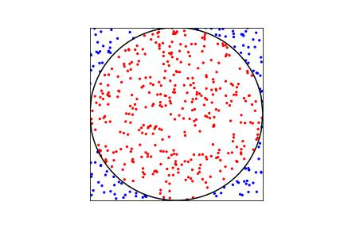

Week 11-12: Estimating Pi with a RNG#
Laboratory 8
Last updated April 24, 2023
00. Content #
Mathematics
probability density function
expectation and variance
integrals in one dimension
Programming Skills
arrays
Embedded Systems
MicroPython and Thonny
0. Required Hardware #
relevant equipment to build an RNG from the previous lab
Write your name and email below:
Name: me
Email: me @purdue.edu
A Monte Carlo Experiment #
Recall that a uniform random variable \(U\) on the interval \((0,1)\) has probability density function $\( f_U(u) = \begin{cases} 1 &, 0<u<1 \\ 0 &, \text{ otherwise} \end{cases}. \)\( So the probability \)U\( takes a value in a subinterval \)(s,t)\( of \)(0,1)\( is exactly the length \)t-s$ of the subinterval.
More genrerally, a uniform random variable \(V\) on the interval \((a,b)\) has probability density function $\( f_V(v) = \begin{cases} \frac{1}{b-a} &, a<v<b \\ 0 &, \text{ otherwise} \end{cases}. \)$
Exercise #
If \(U_1\) and \(U_2\) are uniform random variables on \((0,1)\), then the ordered pair \((U_1,U_2)\) is distributed uniformly in the square of side length 1 centered at \(\left(\frac12,\frac12\right)\). Define
How is \((X,Y)\) distributed?
Write Answer for Exercise Below
A Monte Carlo experiment is a technique to study a response by using random samples. In our first estimation of \(\pi\), we will generate a large number of uniform samples inside a square. If we inscribe a circle in the square and count how many points fall inside the circle, the proportion of points in the circle will approach the proportion of the area of the circle within the square. Suppose the circle has radius \(r\). Intuitively, the probability a random point will land inside the circle is $\( \frac{\text{area of circle}}{\text{area of square}} = \frac{\pi r^2}{(2r)^2} = \frac{\pi r^2}{4r^2} = \frac{\pi}{4}.\)$
(Here’s)[add link] a visualization of this experiment run with 500 samples (points). In the image, 377 points are marked red as being within the circle boundary. If we take the proportion of points in the circle and multiply by 4, we will have an approximation of \(\pi\). In this case \(4 \cdot \frac{377}{500} = 3.016\), which isn’t that close to \(\pi\). Let’s use more samples.

Exercise #
With \((X,Y)\) as defined in Exercise 1, use random.uniform() or np.random.uniform() to generate \(n=10,000\) random pairs \((X,Y)\) and plot them using a scatter plot. Change the color or marker of the points that fall inside the inscribed circle. You don’t have to draw the circle on your plot.
Write Answer for Exercise Below
Exercise #
Use the proportion of points in the circle to estimate \(\pi\). Report the relative and absolute error of your approximation when \(n=\) 5,000; \(n=\) 10,000; \(n=\) 50,000; and \(n=\) 100,000.
Write Answer for Exercise Below
Another way to think about our estimation of \(\pi\) is using a sum of random variables. We randomly generate \(n\) points in the square. Define the random variables \(Z_1,Z_2,\dots,Z_n\) as $\(Z_i = \begin{cases} 1 &, \text{ if random point \)i\( is in the circle} \\ 0 &, \text{ otherwise} \end{cases} \quad \text{ for } i=1,2,\dots,n.\)\( We say \)Z_1,Z_2,\dots,Z_n\( are **indicator variables**. Our approximation for \)\pi\( is then \)\( 4\cdot\frac{Z_1 + Z_2 + \cdots + Z_n}{n}.\)$
The expected value of \(4Z_i\) is
Exercise #
Compute the expected value \(E[(4Z_i)^2]\).
Write Answer for Exercise Below
Exercise #
We know for a random variable \(X\) that \(Var(X)=E[X^2]-(E[X])^2\). Use the formula below to compute the variance of the random variable \(4Z_i\). $\( Var(4Z_i) = E[(4Z_i)^2] - (E[4Z_i])^2.\)$
Write Answer for Exercise Below
Remember that for two independent random variables \(X\) and \(Y\) and constants \(a\) and \(b\), we know that $\( Var(X+Y)= Var(X)+Var(Y) \quad \text{and}\quad Var(aX+b) = a^2 Var(X).\)\( As the last step, let's compute the variance in our estimation of \)\pi$.
Another Estimation #
In our Monte Carlo experiment, we needed \(2n\) samples of a uniform distribution to generate our \(n\) random points in the square. Let’s try to improve our estimation of \(\pi\); this time with only \(n\) uniform samples.
Consider the integral $\( \int_{-1}^1 2 \sqrt{1-x^2}dx = \pi.\)$
We are going to rearange this integral as an expected value. First, recall this fact: If \(X\) is a continuous random variable with probability density function \(f_X(x)\) and \(g\) is any real-valued function, then $\( E[g(X)] = \int_{-\infty}^\infty g(x)f(x)dx. \)$
Exercise #
Suppose \(X\) is a uniform random variable on \((-1,1)\). What function \(g\) would make $\( E[g(X)] = \int_{-\infty}^\infty g(x)f(x)dx = \int_{-1}^1 2 \sqrt{1-x^2}dx = \pi. \)$
Write Answer for Exercise Below
NOTE
This is a 2-week lab. Turn in the exercises above. Pick up from here during the next lab session.
With the appropriate function \(g\), we can approximate \(\pi\). Let \(X_1,X_2,\dots,X_n\) be indepent uniform random variables on the interval \((-1,1)\). Then, $\( E\left[ \frac{g(X_1)+g(X_2)+\cdots + g(X_n)}{n} \right] = \frac 1n E[g(X_1)+g(X_2)+\cdots + g(X_n)] = \frac{nE[g(X_1)]}{n} = \pi.\)$
Exercise #
Generate \(n\) uniform random samples \(x_1,x_2,\dots,x_n\) and calculate the average $\( \frac{g(x_1)+g(x_2)+\cdots + g(x_n)}{n}. \)$
Report the absolute error of your approximation using this method when \(n=\) 5,000; \(n=\) 10,000; \(n=\) 50,000; and \(n=\) 100,000. How does it compare to our first method with the circle in the square?
Write Answer for Exercise Below
In the same way we computed the expected value of \(g(X)\), we can get the expected value of \(g(X)\cdot g(X) = (g(X))^2\) by computing the integral $\( E[(g(X))^2] = \int_{-\infty}^\infty (g(x))^2f(x)dx .\)$
Exercise #
What is the value of \(Var(g(X))\)?
Write Answer for Exercise Below
Now, let’s compute the variance in our alternative estimation of \(\pi\).
Exercise #
How much smaller is the variance in this second method of approximating \(\pi\) compared to the first method?
Write Answer for Exercise Below
Exercise #
If we generate a sequence of 16 binary digits, it is simple to convert to a floating point number between 0 and 1. First convert the binary number to base-10 and then divide by \(2^{16}-1\). Now, we have a way to simulate a uniform random variable on \((0,1)\), or any interval of our choice.
Using your “best” RNG according to previous lab on RNGs, estimate \(\pi\) using both methods presented here for different values of \(n\). Do your estimations of \(\pi\) improve if you use 32 binary digits instead of 16?
Write Answer for Exercise Below
# remove solution
import numpy as np
import matplotlib.pyplot as plt
n = 100_000
x,y = zip(*np.random.uniform(-1,1,size=(n,2)))
circle = np.array([x[i]**2 + y[i]**2 for i in range(n)])
col = np.where(circle < 1,'r','b')
# plt.scatter(x,y,c=col,s=1)
# plt.axis('square')
# plt.xlim((-1,1))
# plt.ylim((-1,1))
# plt.show()
est_1 = sum(col == 'r')/n * 4
x = np.array(x)
est_2 = 4*np.average(np.sqrt(1-x**2))
print(np.array([est_1,est_2])-np.pi)
[-0.00755265 -0.00065555]
Reflection #
1. What parts of the lab, if any, do you feel you did well?
2. What are some things you learned today?
3. Are there any topics that could use more clarification?
4. Do you have any suggestions on parts of the lab to improve?